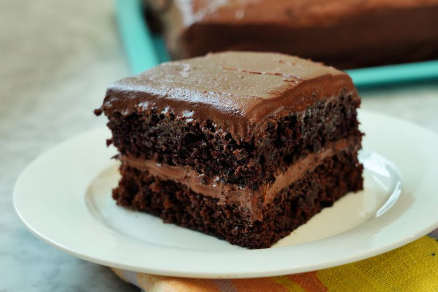

Home
One Bowl Chocolate Cake

Description
This is a recipe for chocolate cake by user shirleyo that I found on AllRecipes. The photo looked really good. It's something I want to try baking one day.
Ingredients
- 2 cups white sugar
- 1 3/4 cups all-purpose flour
- 3/4 cup unsweetened cocoa powder
- 1 1/2 teaspoons baking powder
- 1 1/2 teaspoons baking soda
- 1 teaspoon salt
- 2 large eggs
- 1 cup milk
- 1/2 cup vegetable oil
- 2 teaspoons vanilla extract
- 1 cup boiling water
Steps
- Gather all ingredients. Preheat oven to 350 degrees F. Grease and flour two 9-inch round baking pans.
- Stir sugar, flour, cocoa, baking powder, baking soda, and salt together in a large bowl.
- Add eggs, milk, oil and vanilla; mix for 2 minutes on medium speed with an electric mixer.
- Stir in the boiling water. The batter will be thin.
- Pour evenly into the prepared pans.
- Bake in preheated oven until a toothpick inserted into the center comes out clean, about 30 to 35 minutes. Cool in the pans for 10 minutes, then transfer to a wire rack to cool completely.
- Enjoy!